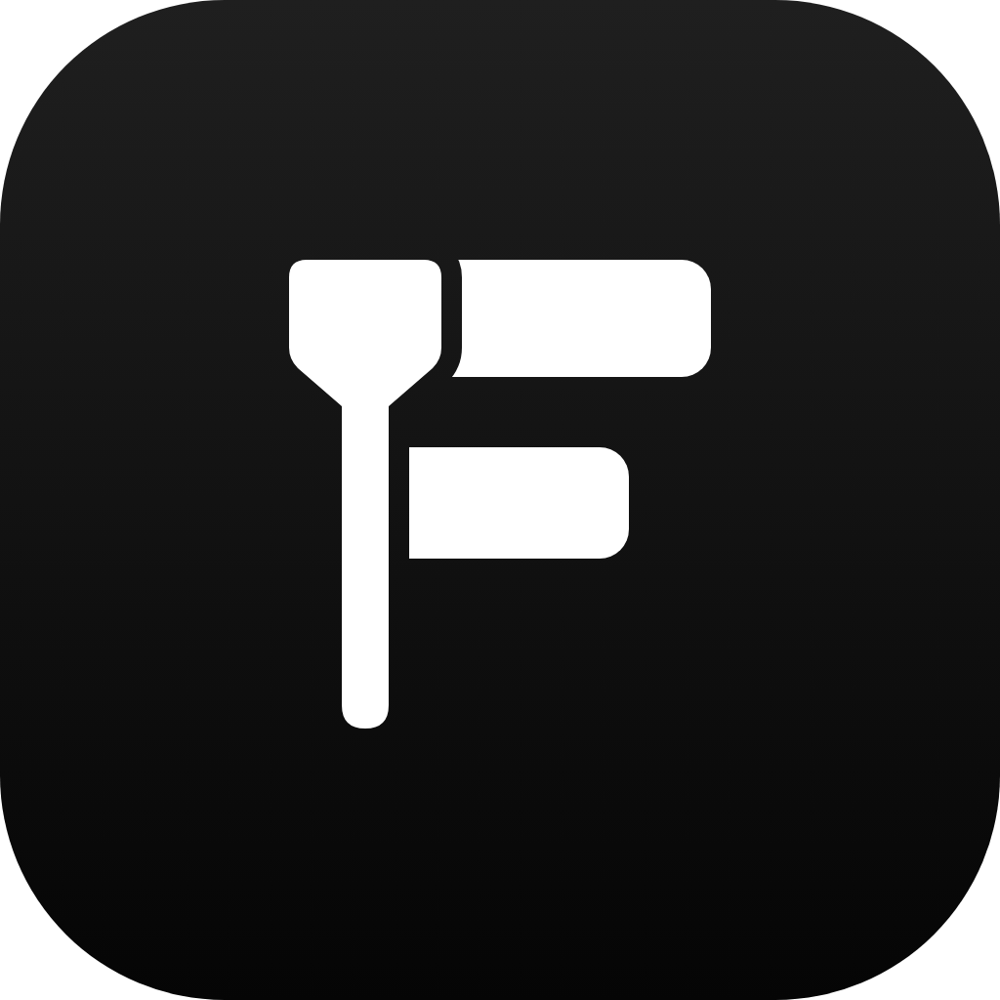

Terminal
$
✓ 装好了 · 跟你的 Agent 说想做什么视频
装进你的 Agent，一行就够

下载客户端
macOS · Windows
v0.1
今天
凌晨 3:00
No. 000001
早期股东证
持股人
屏幕前的你
入股金额
¥ 0.00
入股方式
点了一下关注
OpenFilm · 2026 年 10 月
OPENFILM · 入股专用章
已入股
点赞
投币
收藏
你最想让它剪什么？
评论
1,286
最热
· 最新
你
发送
就剪它
下期见
github.com/openfilm/openfilm